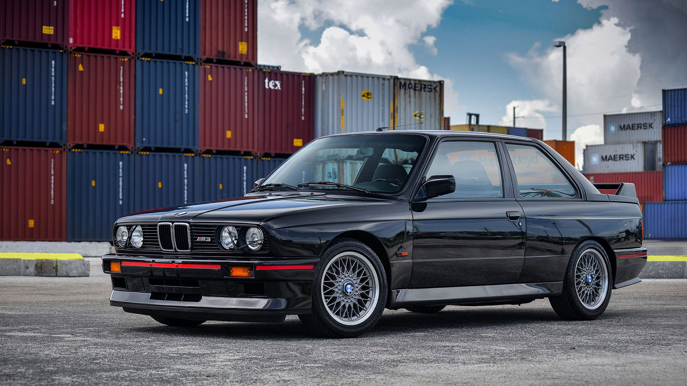

E26 M1 (1978–1981)

Silnik: 3,5 litrowa rzędowa szóstka o mocy 277 koni mechanicznych.
Osiągi: Przyśpieszenie od 0 do 100 km/h wynosi 6.2s. Prędkość maksymalna to 265 km/h. Średnie spalanie
wynosi 12.9l/100km
Wygląd zewnętrzny: Dwudrzwiowe coupe ważące 1300kg, Długość pojazdu wynosi 4,36m.
Napęd: 5 biegowa skrzynia manualna z silnikiem między osią przednią i tylną i napędęm na tylną oś.
E12 M535i (1980-1984)

Silnik: 3,5 litrowa rzędowa szóstka o mocy 218 koni mechanicznych.
Osiągi: Przyśpieszenie od 0 do 100 km/h wynosi 7.2s. Prędkość maksymalna to 237 km/h. Średnie spalanie
wynosi 14.4l/100km
Wygląd zewnętrzny: Czterodrzwiowy sedan ważący 1439kg, Długość pojazdu wynosi 4,62m.
Napęd: 5 biegowa skrzynia manualna z silnikiem ulokowanym z przodu i napędęm na tylną oś.
E24 M635 CSi (1984-1989)

Silnik: 3,5 litrowa rzędowa szóstka o mocy 286 koni mechanicznych.
Osiągi: Przyśpieszenie od 0 do 100 km/h wynosi 6.4s. Prędkość maksymalna to 245 km/h. Średnie spalanie
wynosi 11.3l/100km
Wygląd zewnętrzny: Dwudrzwiowe coupe ważące 1500kg, Długość pojazdu wynosi 4,75m.
Napęd: 5 biegowa skrzynia manualna z silnikiem ulokowanym z przodu i napędęm na tylną oś.
E28 M5 (1985-1988)

Silnik: 3,5 litrowy sześciocylindrowy silnik z cylindrami umieszczonymi rzędowo o mocy 286 koni
mechanicznych.
Osiągi: Przyśpieszenie od 0 do 100 km/h wynosi 6.5s. Prędkość maksymalna to 255 km/h. Średnie spalanie
wynosi 11.3l/100km
Wygląd zewnętrzny: Czterodrzwiowy sedan ważący 1410kg, Długość pojazdu wynosi 4,62m.
Napęd: 5 biegowa skrzynia manualna z silnikiem ulokowanym z przodu i napędęm na tylną oś.
E30 M3 (1986-1991)

Silnik: 2.3 litrowy silnik benzynowy R4 z czteroma cylindrami umieszczonymi rzędowo o mocy 200 koni
mechanicznych.
Osiągi: Przyśpieszenie od 0 do 100 km/h wynosi 6.7s. Prędkość maksymalna to 235 km/h. Średnie spalanie
wynosi 8.3l/100km
Wygląd zewnętrzny: Dwudrzwiowe coupe ważące 1165kg, Długość pojazdu wynosi 4,35m. Występowała również wersja
nadwozia typu kabriolet.
Napęd: 5 biegowa skrzynia manualna z silnikiem ulokowanym z przodu i napędęm na tylną oś.
E34 M5 (1986-1991)

Silnik: Rzędowa szóstka o pojemności 3.5 litra generujący moc 315 koni mechanicznych.
Osiągi: Przyśpieszenie od 0 do 100 km/h wynosi 6.3s. Prędkość maksymalna elektronicznie ograniczona to 250
km/h, bez ograniczenia wynosi ona 270 km/h. Średnie spalanie wynosi 11.9l/100km
Wygląd zewnętrzny: Czterodrzwiowy sedan ważący 1670kg, Długość pojazdu wynosi 4,72m. Występowała również
wersja nadwozia typu kombi.
Napęd: 5 biegowa skrzynia manualna z silnikiem ulokowanym z przodu i napędęm na tylną oś.